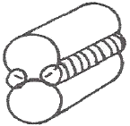
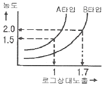
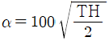
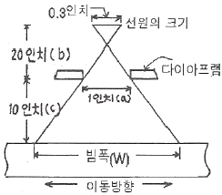

방사선비파괴검사기사 (2014-09-20 기출문제)
1과목: 비파괴검사 개론
1. 다음 중 30mm 압연 강판에 존재하는 라미네이션을 검사하고자 할 때 가장 적절한 비파괴검사법은?
- 자동 방사선투과검사
- 자동 와전류탐상검사
- 자동 초음파탐상검사
- 질량분석 누설검사
(정답률: 67%)

2. 다음 중 비파괴검사법에 대한 일반적인 설명으로 틀린 것은?
- 초음파탐상시험은 방사선투과시험보다 두꺼운 강재를 검사할 수 있다.
- 방사선투과시험은 결함의 깊이와 형태를 정확히 알 수 있다.
- 초음파탕상시험은 원리적으로 펄스반사법이 많이 이용되고 있다.
- 표면결함의 검출은 강자성체의 경우 자분탐상시험이 효과적이다.
(정답률: 64%)
3. 와전류탐상시험이 가능하지 않은 대상물은?
- 고무 막대
- 강철 막대
- 구리 막대
- 알루미늄 막대
(정답률: 81%)
4. 자분탐상검사에 영향을 미치는 자분의 성질로 가장 거리가 먼 것은?
- 자분의 색조와 휘도
- 자분의 전기적 성질
- 자분의 입도
- 자분의 비중
(정답률: 50%)
5. 다음 중 침투탐상시험이 적합한지를 선택하는 조건과 거리가 먼 것은?
- 시험체의 재질
- 시험체의 형상
- 시험체의 표면 상태
- 시험체의 제작 공차
(정답률: 61%)
6. 판재를 펀치와 다이 사이에서 압축하여 성형하는 방법은?
- 압출 가공
- 프레스 가공
- 인발 가공
- 압연 가공
(정답률: 62%)
7. 담금질(quenching)후의 마텐자이트의 결정구조는?
- 체심정방격자
- 면심입방격자
- 면심입방격자
- 조밀육방격자
(정답률: 44%)
8. 오스테나이트 스테인리스강의 입계부식에 관한 설명으로 틀린 것은?
- 결정입계에 탄화물 석출에 의해 부식이 발생된다.
- 결정입계에 질화물 석출에 의해 부식이 발생된다.
- 티타늄을 첨가하면 입계에 부식이 촉진된다.
- 결정입계에 크롬 농도가 감소되어 부식이 발생한다.
(정답률: 75%)
9. 순철의 변태가 아닌 것은?
- A4 변태
- A3 변태
- A2 변태
- A1 변태
(정답률: 48%)
10. 주석청동 주물은 상당한 강도가 있고, 마모ㆍ수압 및 부식에 견디며, 외관도 미려하므로 널리 사용되나 용탕의 유동성을 좋게 하기 위하여 첨가하는 것은?
- S
- Ni
- Zn
- Pb
(정답률: 52%)
11. 강의 시험에서 죠미니 선단 담금질(Jominy end quenching test)시험의 목적은?
- 경화능시험
- 초단파시험
- 자기이력시험
- 전자유도시험
(정답률: 62%)
12. 6:4 황동에 Sn을 넣은 것으로 복수기판, 용접봉 등에 이용되는 것은?
- Naval brass
- Haed brass
- Albrac bronze
- Admiralty metal
(정답률: 58%)
13. 강중에 비금속 개재물의 영향을 설명한 것으로 틀린 것은?
- 재료 내부에 점재하여 인성을 해친다.
- 강에 백점이나 헤어 크랙의 원인이 된다.
- 철의 규산염 등은 적열취성의 원인이 된다.
- 열처리 하였을 때 개재물로부터 균열을 일으키기 쉽다.
(정답률: 45%)
14. 금속재료에서 탄소의 함량이 가장 적은 것에서 많은 순서로 옳은 것은?
- 전해철＜연강＜주철＜경강
- 전해철＜연강＜경강＜주철
- 연강＜전해철＜경강＜주철
- 연강＜전해철＜주철＜경강
(정답률: 50%)
15. 금속 분말의 유동성에 영향을 미치는 인자가 아닌 것은?
- 분말의 수분 함량
- 분말의 입도 및 형상
- 분말의 자기적 성질
- 분말과 용기 사이의 마찰 계수
(정답률: 67%)
16. 알루미늄, 마그네슘, 구리 및 구리합금, 스테인리스강의 절단에 주로 이용되는 절단법은?
- 산소 아크 절단
- 탄소 아크 절단
- 아크 에어 가우징
- 티크 절단
(정답률: 58%)
17. 일반적인 서브머지드 아크용접에 대한 설명으로 옳은 것은?
- 용입 깊이가 얕다.
- 사용 용접전류가 적어 용접능률이 낮다.
- 아크가 눈에 보이므로 용접상태를 확인하면서 용접 할 수 있다.
- 용접선이 길고, 연속용접이 가능한 부재에 적용하는 것이 적합하다.
(정답률: 58%)
18. 용접결함 중 치수상의 결함이 아닌 것은?
- 스트레인 변형
- 용접부 크기의 부적당
- 접합 불량
- 용접부 형상의 부적당
(정답률: 19%)
19. 이산화탄소 아크용접 와이어에 구리 도금을 한 이유에 해당되지 않는 것은?
- 와이어의 녹을 방지한다.
- 전류의 가속(Pick-up)을 개선한다.
- 비드 외관을 개선하기 위함이다.
- 자연수명을 증가시키기(넓히기) 위함이다.
(정답률: 27%)
20. 다음 그림과 같은 플레어 용접의 홈 종류는?

- V형
- X형
- K형
- J형
(정답률: 68%)
2과목: 방사선투과검사 원리
21. 다음 중 방사선투과 사진의 감도와 관계가 없는 것은?
- 기하학적 불선명도
- 필름의 입도
- 산란방사선
- 필름의 크기
(정답률: 83%)
22. 방사선투과검사 시 촬영된 필름에 초생달 모양의 흰 자국이 생기는 경우로 가장 적절한 것은?
- 정착액이 약화되었을 때
- 현상 중 온도변화가 심할 때
- 촬영 전 필름이 구겨졌을 때
- 촬영 후 필름이 구겨졌을 때
(정답률: 62%)
23. 밀봉되지 않은 방사성 동위원소에서 방출하는 선량률이 100feet 거리에서 900mR/h이면 300feet에서의 선량률은?
- 100mR/h
- 300mR/h
- 600mR/h
- 2700mR/h
(정답률: 50%)
24. 식별한계 콘트라스트에 대한 내용으로 틀린 것은?
- 상의 크기와 농도의 분포
- X선 필름의 입상성(증감지, 방사선질)
- Ir-192가 Co-60보다 식별한계 콘트라스트가 크다.
- 투과사진의 관찰 조건 및 개인차
(정답률: 43%)
25. 방사선 내부피폭의 방어원칙에 속하지 않는 것은?
- 선원 격납
- 경로 차단
- 화학적 처리
- 차폐체 이용
(정답률: 50%)
26. 다음 중 방사선투과시험의 필터(filter)의 영향에 대한 설명으로 잘못된 것은?
- 필터는 방사선을 연화(softening시키므로 과잉의 피사체 콘트라스트를 줄인다.
- 장파장의 방사선은 단파장의 방사선량만큼 필터를 투과하지 못한다.
- 필터를 사용하면 전압을 올리는 것과 유사한 효과를 얻는다.
- 필터를 사용하면 전체 방사선의 강도를 감소시킨다.
(정답률: 32%)
27. 10Ci의 Co-60 선원으로부터 10m 떨어졌을 때의 선량률은 얼마인가? (단, C0-60의 RHM값은 1.35이다.)
- 0.35mR/h
- 13.5mR/h
- 135mR/h
- 1.35mR/h
(정답률: 39%)
28. 입상성이 큰 필름은 어떤 특성이 있는가?
- 입상성이 작은 필름보다 명료도가 좋아진다.
- 입상성이 작은 필름보다 선명도가 좋아진다.
- 입상성이 작은 필름보다 감광속도가 빨라진다.
- 입상성이 작은 필름보다 노출시간이 길어진다.
(정답률: 52%)
29. 다음 중 방사선작업종사자의 인체가 방사선에 영향을 받는 요소가 아닌 것은?
- 개개인의 생물학적 효과비
- 조사된 방사선의 총량
- 선원의 용량
- 개개인의 연령차이
(정답률: 39%)
30. Mo를 표적으로 사용한 X선관의 관전압을 높였을 때, 발생되는 Kα 특성X선의 파장은?
- 짧아진다.
- 길어진다.
- 변하지 않는다.
- 경우에 따라 길어질 때도 있고, 짧아질 때도 있다.
(정답률: 20%)
31. 다음 중 방사선투과사진의 콘트라스트에 영향을 주는 인자가 아닌 것은?
- 기하학적 조건
- 시편의 두께차
- 필름의 종류
- 방사선의 에너지
(정답률: 45%)
32. 다음 중 X선의 일반적인 성질이 아닌 것은?
- 직진한다.
- 빛의 속도와 동일하다.
- 필름을 감광시킨다.
- 전기 또는 자장의 영향을 받는다.
(정답률: 39%)
33. 방사성 핵종인 세슘 137에 대한 설명으로 부적절한 내용은?
- 세슘 137은 핵분열 생성물의 주성분의 하나이다.
- 세슘 137은 반감기가 30년이다.
- 세슘 137은 1.22MeV의 γ선을 방출한다.
- 세슘 137은 β-방사체 이다.
(정답률: 42%)
34. 방사성동위원소의 붕괴기구(disintegration mechanism)중에서 중성자의 방출이 동반되어 중성자원으로 이용될 수 있는 것은?
- 감마선 방출
- 자발핵분열
- 알파입자의 방출
- 베타입자의 방출
(정답률: 65%)
35. 2.54cm 두께 알루미늄판 내에 0.13cm의 공동결함이 있을 때 X선 투과촬영법에 의해 필름에 도달한 투과강도의 비는 대략 어떻게 되는가? (단, 알루미늄의 X선 흡수계수(μ)는 1.89cm-1)
- 1:2.8
- 1:2.5
- 1:1.3
- 1:1.1
(정답률: 45%)
36. 다음 중 피사체 콘트라스트에 영향을 주는 인자가 아닌 것은?
- 시험체의 재질
- 방사선의 에너지
- 산란방사법
- 관전류
(정답률: 48%)
37. γ선과 물질과의 상호작용에서 γ선 에너지가 2moC2이상일 때 일어날 수 있는 상호작용은? (단, 여기서 mo와 C는 각각 전자의 정지질량과 광속도를 나타낸다.)
- 광전효과
- 콤프턴산란
- 전자쌍생성
- Auger 효과
(정답률: 43%)
38. 그림과 같이 100mAㆍs의 노출량으로 A타입의 필름을 촬영하여 사진농도 1.5를 얻었을 때, 촬영배치의 변화없이 B타입의 필름으로 사진농도 2.0을 얻으려면 필요한 노출량은 얼마인가?

- 50mAㆍs
- 250mAㆍs
- 400mAㆍs
- 500mAㆍs
(정답률: 6%)
39. 노출도표에 명시되어야 할 사항이 아닌 것은?
- X-선 장비 명칭 및 일련번호
- 투과도계의 종류 및 증감지 종류
- 필름의 종류 및 FFD
- 기준농도 및 현상 조건
(정답률: 50%)
40. X선 발생장치의 취급에 대한 주의사항으로 틀린 것은?
- X선 방생장치의 확인은 복수의 방법으로 행한다.
- X선 발생기의 제어기는 주기적으로 커버를 열고 내부를 청소한다.
- X선 장치를 사용 중에는 필름배지를 휴대해야 한다.
- 인터록, 도어 스위치 등의 외부 안전회로와 연동하여 사용할 때는 정기적으로 인접회로의 작동을 확인한다.
(정답률: 67%)
3과목: 방사선투과검사 시험
41. 정전기를 띤 세레늄(selenuium) 하전판을 사용하여 X선 영상을 기록하는 건식 방사선투과시험 방법을 무엇이라 하는가?
- Stereo Radiography
- Television Radiography
- Xero Radiography
- Neutron Radiography
(정답률: 44%)
42. 방사선 투과사진에서 강이나 경금속 등 재질의 종류에 관계없이 시험체의 두께가 얇아지면 투과도계의 식별도는 어떻게 되는가? (단, 다른 조건의 변화는 없다.
- 좋아지는 경향이 있다.
- 나빠지는 경향이 있다.
- 얇아진 두께의 제곱에 비례한다.
- 얇아진 두께의 제곱근에 비례한다.
(정답률: 18%)
43. 다음 중 방사선투과시험 정지액으로 사용되는 용액 중 가장 적당한 것은?
- 물
- 3% 빙초산 수용액
- 10% 빙초산 수용액
- 15% 빙초산 수용액
(정답률: 60%)
44. 방사선투과검사 필름용 자동현상기의 관리에 관한 설명으로 틀린 것은?
- 수시로 현상온도를 점검한다.
- Roller rack를 정기적으로 세척한다.
- 처리액 보충탱크에는 물에 뜨는 덮개를 사용한다.
- 보충액을 장기간 사용할 수 있도록 대량 제조한다.
(정답률: 64%)
45. 사진처리 과정에서 정착의 기능이 아닌 것은?
- 현상 안된 은염의 제거
- 현상 반응의 정지
- 현상된 은을 영구상으로 고착화
- 건조 공정에서 손상을 입지 않도록 젤라틴의 경화
(정답률: 42%)
46. 저에너지 γ선 선원에는 75Sem 169Yb, 170Tm 및 153Gd 등이 있다. 다음 중 반감기가 짧은 것부터 긴 것으로 순서대로 나열된 것은?
- 75Se-169Yb-153Gd-170Tm
- 153Gd-170Tm-169Yb-75Se
- 169Yb-75Se-170Tm-153Gd
- 170Tm-75Se-153Gd-169Yb
(정답률: 40%)
47. X 선관에서 소비되는 전력과 X선 출력과의 비로 표현될 수 있는 X선의 발생효율은 무엇에 비례하는가?
- 관전압
- 표적재료의 질량
- 관전류
- 표적재료의 원자번호
(정답률: 45%)
48. 150kVp X선에 의한 방사선투과 등가게수가 조건과 같을 때 강(steel) 12.7mm(0.5인치)두께와 동일한 노출시간을 얻기 위한 인코넬의 등가두께는 약 몇 mm인가? (단, 강에 대한 인코넬의 등가계수 : 1.4이다.)
- 9.1mm
- 12.7mm
- 17.8mm
- 25.4mm
(정답률: 23%)
49. ASTM 투과도계 사용 시 주의사항으로 틀린 것은?
- 투과도계 시험하는 시험편과 재질이 동일한 것을 원칙으로 한다.
- 투과도계 두께는 시험편 두께의 1%이하이어야 한다.
- 투과도계 직경은 투과도계 두께의 4배, 2배 및 1배이며 최소 직경은 각각 0.04, 0.02, 0.01 인치이다.
- 지시번호는 투과도계의 납글자로 구성되며 지시번호는 투과도계가 사용되는 시험편의 두께범위를 나타낸다.
(정답률: 50%)
50. 한 카세트내에 감광속도가 다른 2개 이상의 필름을 넣고 촬영하는 주된 이유는?
- 필름의 영상에 미치는 산란방사선을 감소시키기 위하여
- 1회 촬영으로 두께가 다른 시험체를 검사하기 위하여
- 필름에 나타날 수 있는 인공결함으로 인한 재촬영을 피하기 위하여
- 부적절한 노출시간으로 산란방사선이 생기는 것을 억제하기 위하여
(정답률: 52%)
51. 맞대기 용접부의 방사선 투과사진에서 최고 및 최저 농도에 대한 설명으로 옳은 것은?
- 최저 농도는 중앙 용접부의 가장 낮은 값을 나타낸다.
- 최고 농도는 용접부의 양끝단 가장 높은 값을 나타낸다.
- 최고 농도는 좌우 양끝단 용접부의 농도 중 가장 높은 값을 나타낸다.
- 최저 농도는 좌우 양끝단 용접부의 농도 중 가장 낮은 값을 나타낸다.
(정답률: 58%)
52. 방사선 투과검사에 사용되는 X선관이 고진공을 사용하므로써 장비에 미치는 영향이 아닌 것은?
- X선 장비가 소형화 됨
- X선 장비의 수명이 길어짐
- X선 장비의 작동이 보다 안전하게 됨
- X선 장비의 노후화가 빨리 됨
(정답률: 60%)
53. Co-60 선원 35 Ci를 사용하여 7cm 두께 강판 용접부위를 촬영하는데 18분의 노출시간이 필요했다. 만일 100 Ci를 사용하고 다른 조건이 동일하다고 할 때의 노출시간은?
- 1.5분
- 6.3분
- 44.1분
- 51.4분
(정답률: 69%)
54. 납스크린의 깊은 긁힘 자국이 투과사진에 검은 선으로 나타나는 그 이유는?
- 납스트린에서 방사선의 흡수량이 늘어나기 때문에 보다 많은 방사선이 필름에 도달하기 때문
- 긁힘 자국에서는 표면적이 늘어나기 때문에 필름노출에 영향을 주는 전자의 방출이 증가하기 때문
- 긁힘 자국과 필름사이에 공기막이 형성되기 때문
- 긁힘 자국은 투과사진에 영향을 주지 않기 때문에 투과사진에 나타난 검은 선은 다른 원인에 기인한다.
(정답률: 32%)
55. X선 발생장치로 방사선 투과검사를 실시할 경우 필름의 양면과 직접 접촉하여 사용된 연박증감지가 상질에 가장 바람직한 효과를 얻을 수 있는 관전압의 범위는?
- 150~400kVp
- 500~750kVp
- 800~1000kVp
- 1100~2000kVp
(정답률: 50%)
56. 비파괴검사 시 주조품에서 대표적으로 발견되는 불연속이 아닌 것은?
- 심(seams)
- 기공(gas pockts)
- 수축관(shrinkage)
- 열터짐(hot tears)
(정답률: 38%)
57. 다음은 방사선투과 검사방법에 관한 설명으로 옳은 것은?
- X선관에 의해 방출되는 방사선의 총량은 관전류, 관전압 및 X선관이 작동하는 시간에 의해 결정되며, 다른 작동조건이 일정할 때 전류가 변하면 방출되는 방사선의 투과력에 변화가 생긴다.
- γ선원으로부터 방출되는 방사선의 총량은 선원의 강도 및 노출시간에 따라 결정되며, 방사선의 투과력은 선원의 강도(세기)에 비례한다.
- X선의 노출인자는 mA×min이고 γ선의 노출인자는 Ci×min이 되며, 노출인자를 고려하여 촬영배치를 설정한다.
- .X선관에 적용되는 전압은 선질뿐만 아니라 빔의 강도에도 영향을 미치며, 전압이 높아짐에 따라 보다 짧은 파장의 X선이 생성되어 투과력이 증가한다.
(정답률: 33%)
58. 다음 중 공업용 X선관의 초점 크기를 결정하는 것은?
- X 선관의 크기
- 집속컵의 크기
- 냉각물질의 재질
- X선관 창(Window)의 크기
(정답률: 43%)
59. 고에너지 X선 발생장치에 대한 설명 중 맞는 것은?
- 멀티섹션식의 X선관을 갑는 공진변압기형 장치는 보통의 단일섹션으로 된 X선관에서 발생되는 X선보다 훨씬 낮은 투과력을 갖는다.
- 반데그라프형 발생장치 중 일반적인 방사선투과검사용으로 사용되어지는 것은 2.5MeV 범위이다.
- 베타트론은 0.013×0.025cm의 텅스텐(W)와이어 표적을 사용한다.
- 선형가속기는 radio frequency voltage에 의해 전자를 가이드 아래로 가속하며, 진행파 가속방법과 압축파 가속방법이 있다.
(정답률: 29%)
60. 다음 중 방사선 투과검사 시 산란선의 영향을 줄이기 위하여 사용하는 보조재가 아닌 것은?
- 마스크(Mask)
- 콜리메이터(Collimator)
- 연박스크린(Lead foil screen)
- 격자 다이아프램(Grid diaphragm)
(정답률: 50%)
4과목: 방사선투과검사 규격
61. 비파괴검사를 위한 방사선투과검사 시 방사선의 인체에 대한 영향과 관계없는 것은?
- 신체적 장해를 유발할 수 있다.
- 유전적 장해를 유발할 수 있다.
- 내부피폭에 의한 위험성이 높다.
- 외부피폭에 의한 위험성이 높다.
(정답률: 41%)
62. 주강품의 방사선 투과시험방법(KS D 0227)에 의해 주강품에서 수축을 필름 위에서 측정하는 경우 호칭두께가 15mm일 때 시험시야의 크기(지름)는?
- 20mm
- 30mm
- 40mm
- 50mm
(정답률: 31%)
63. 주강품의 방사선투과 시험방법(KS D 0227)에 의한 주강품의 결함에 해당되지 않는 것은?
- 블로홀
- 갈라짐
- 용입 불량
- 모래 박힘 및 개재물
(정답률: 45%)
64. β선에 대한 검출감도가 특히 높고, 표면 오염의 검출에 주로 사용할 수 있는 방사선 측정기는?
- TLD식 측정기
- 이온함식 측정기
- G-M 계수관식 측정기
- 신틸레이션 계수관식 측정기
(정답률: 65%)
65. 강용점 이음부의 방사선투과시험방법(KS D 0845)에 따라 결함을 평가할 때 틀린 것은?
- 제1종 결함에 있어서 결함의 긴 지름이 모재두께의 1/2을 초과하면 4류로 한다.
- 제2종 결함의 평가 시 크기에 관계없이 융합부족이 있으며 1류가 될 수 없다.
- 0.5mm 이하의 제1종 결함이라도 시험 시야 내에 15개 이하 있으면 1급이 될 수 있다.
- 결함의 종별이 1종류인 경우는 그 분류를 총합 분류로 한다.
(정답률: 46%)
66. 알루미늄 주물의 방사선투과시험방법 및 투과사진의 등급분류 방법(KS D 0241)에서 대상으로 하는 결함과 형상이 아닌 것은?
- 수축(별 모양)
- 수축(스펀지 모양)
- 가스 포로시티(봉모양)
- 가스 포로시티(원모양)
(정답률: 53%)
67. 원자력안전법시행규칙에서 사용 중인 방사성동위원소의 사용 등의 신고대상 수량으로 옳은 것은?
- 표면방사선량률 : 100μSv/h 이하
- 표면방사선량률 : 200μSv/h 이하
- 표면방사선량률 : 300μSv/h 이하
- 표면방사선량률 : 500μSv/h 이하
(정답률: 32%)
68. 보일러 및 압력용기에 대한 표준방사선투과검사(ASME Sec,V, Artㆍ22 SE-1025)에 의한 투과도계의 사용에 관한 설명 중 옳은 것은?
- 투과도계의 번호는 투과도계의 두께의 100배이다.
- 투과도계의 감도를 구하는 공식은

로 표시된다. - 2-2T 투과도계 등가 감도는 2%가 된다.
- 1-1T 투과도계 등가 감도는 1%가 된다.
(정답률: 50%)
69. 보일러 및 압력용기에 대한 방사선투과검사(ASME Sec,V, Art.2)에서 부재 두께가 2.5인치 일 때 허용되는 기하학적 불선명도는 얼마인가?
- 0.020 인치
- 0.030 인치
- 0.040 인치
- 0.070 인치
(정답률: 25%)
70. 수시출입자에 대한 비부의 연간선량한도는?
- 20 mSv
- 50 mSv
- 150 mSv
- 500 mSv
(정답률: 59%)
71. 방사선 서베이터의 지시 값이 0.9R/h 이었을 때 그 위치에서 30분 동안의 피복선량은 얼마인가?
- 0.3R
- 0.45R
- 2.4R
- 18R
(정답률: 85%)
72. 포켓 도시미터(Pocket Dosimeter) 사용에 관한 설명 중 틀린 것은?
- 방사선에 대한 방항성 때문에 패용상 문제점이 있다.
- 외부충격 및 전기적 충격에 취약하다.
- 직독식 포켓도시미터와 포켓 챔버형이 있다.
- 작업 중에 수시로 눈금을 확인할 수 있다.
(정답률: 56%)
73. 방사선 측정기기 중 방사선 작업구역(공간) 부근의 방사선량을 측정하기 위한 기기는?
- 필름배지
- 서베이미터
- 포켓선량계
- 열형관선량계
(정답률: 73%)
74. 방사선 작업종사자의 손에 대한 연간 등가선량한도는?
- 150mSv
- 2500mSv
- 3000mSv
- 500
(정답률: 36%)
75. 방사선투과검사의 목적으로 작업장 개설 및 변경의 경우 신고서를 언제까지 제출해야 하는가?
- 변경사유가 발생한 날부터 5일 이내
- 변경사유가 발생한 날부터 15일 이내
- 변경사유가 발생한 날부터 30일 이내
- 변경사유가 발생한 날부터 60일 이내
(정답률: 29%)
76. 보일러 및 압력용기에 대한 방사선투과검사(ASME Sec,V, Art.2)에 따라 관의 촬영시 단일벽 촬영기법의 적용이 곤란하여 이중벽 촬영기법을 적용할 때 원주 용접부의 전 구간 촬영범위가 요구될 때 단일 벽 관찰시의 내용으로 옳은 것은?
- 360도 전체를 최소 1회 촬영 실시
- 1800도 전체를 최소 2회 촬영 실시
- 120도 전체를 최소 3회 촬영 실시
- 90도 전체를 최소 2회 촬영 실시
(정답률: 28%)
77. ASME Sec,V, Art.2에 따라 방사선투과검사를 수행하려 한다. 단벽관찰의 경우 투과 사진 상에 나타내어지는 위치 마커는 보통 선원 쪽에 배치한다. 다음 중 필름쪽에 위치 마커를 놓는 경우는?
- 편평한 시험체
- 곡률을 갖는 시험체에서 오목한 쪽에 선원이 위치하고 선원-시험체간 거리가 시험체의 내반경보다 큰 경우
- 곡률을 갖는 시험체에서 볼록한 쪽에 선원이 위치하는 경우
- 원통형이나 원추형 시험체의 길이 이음부
(정답률: 34%)
78. 알루미늄 평판 접합 용접부의 방사선투과 시험방법(KS D 0242)에 따라 시험할 때 상질이 A급일 때 투고사진의 농도 범위로 옳은 것은?
- 1.0이상 3.0이하
- 1.3이상 3.5이하
- 1.8이상 3.5이하
- 2.0이상 40이하
(정답률: 35%)
79. 원자력안전법에서 규정하고 있는 방사선작업종사자의 유효 선량한도로 옳은 것은?
- 연간 5밀리시버트
- 연간 50밀리시버트를 넘지 아니하는 범위에서 5년간 100밀리시버트
- 연간 5밀리시버트를 넘지 아니하는 범위에서 5년간 10밀리시버트
- 연간 5밀리시버트를 넘지 아니하는 범위에서 5년간 20밀리시버트
(정답률: 82%)
80. ASME Sec. V에 따라 이동식 방사선투과시험 촬영 시 그림과 같은 조건이 주어졌을 경우 빔폭(W)의 값은 얼마인가?

- 1.53인치
- 1.65인치
- 1.78인치
- 2.⑤인치
(정답률: 32%)